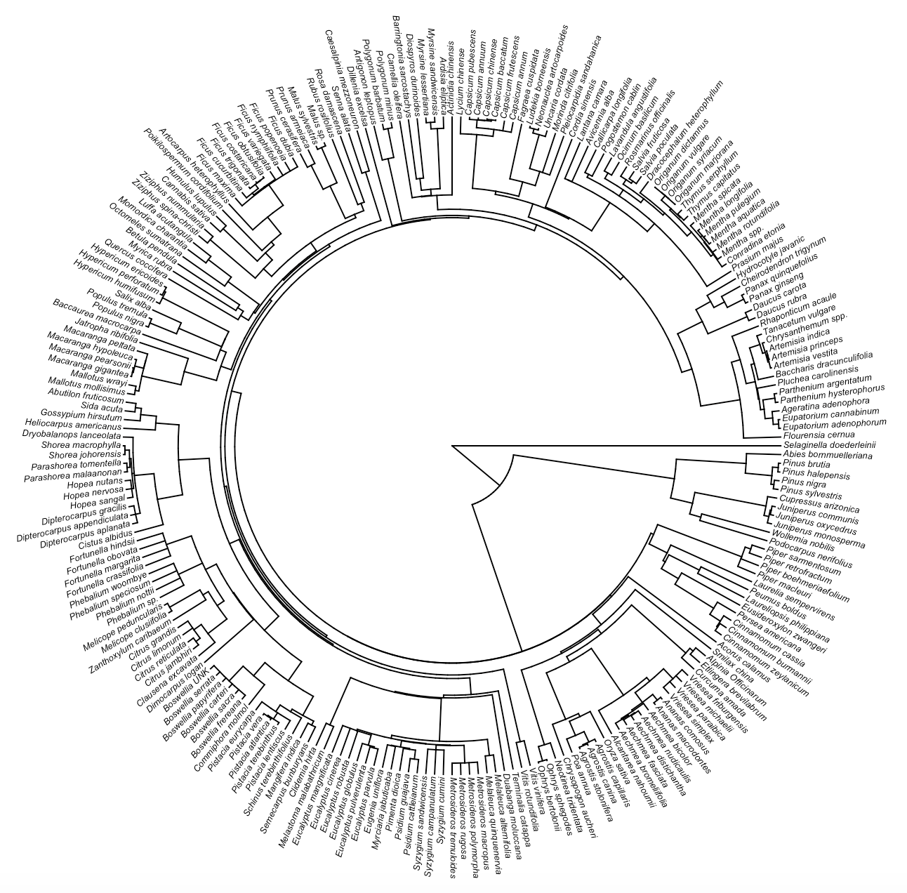
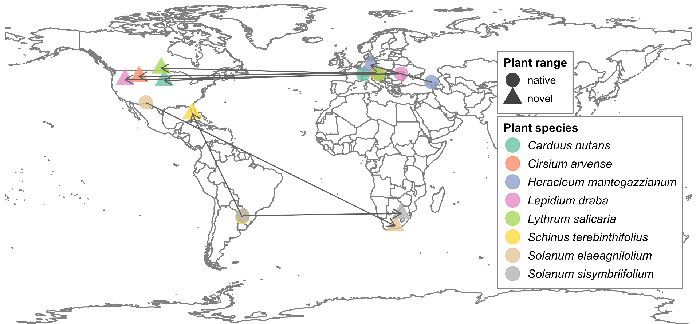

Research Projects
The global distribution of plant terpenes and terpenoids
Terpenes and terpenoids represent one of the most diverse classes of secondary metabolites produced by plants. These phytochemicals can repel enemies, attract pollinators, dispersers, and defenders, and communicate to neighboring plants. Despite significant ecological and evolutionary consequences, patterns in terpene and terpenoid abundance and diversity in plants are largely unknown due to widespread variation in growth conditions and chemical compound detection methods. However, with recent advancements in data mining and statistical modeling, we can synthesize known terpene and terpenoid profiles to identify broad patterns like the distribution of terpenoid diversity globally and across plant organs. By uncovering global patterns in terpenoid diversity across the plant phylogeny, we can move closer toward understanding how secondary metabolites, like terpenes and terpenoids, mediate interactions between plants and their communities.
However, before we can answer these questions, we must synthesize what we know about plant terpenes and organize in a central location for end users. Alongside a team of biologists, I’m developing collaborative data collection pipelines through R Shiny applications that help us extract data from existing literature about plant terpenes and terpenoids. We then build a cloud-hosted SQL database for access across collaborators and users interested in answering a wide range of questions, from terpene sources of aroma in wine grapes to how lab techniques influence compound detection efficacy.

Quantifying the temporal ecology of plant-antagonist interactions
For decades, ecologists in Western science have studied how species and their communities change across time. Time as a unit of measurement and as an axis of understanding the world helps us model species distributions, rates of evolution, phenology and ontogeny, and resource fluctuations. However, we’re still missing examples of modeling impact throughout time that: (a) evaluate impact by modeling shorter time series and (b) manipulate the nature, timing, and frequency of species interactions as priority effects in community ecology. Working with tall goldenrod (Solidago altissima) and its herbivores in common garden and field experiments in southwestern Michigan at Kellogg Biological Station, I ask the following questions:
1. How do single and multiple herbivory events alter host plants and subsequent community ecology?
2. How can we leverage statistical models to evaluate the impact of these interaction events?

How do we leverage field biologists’ quantitative skills for effective public communication?

How do insect communities assemble on non-native plants?
Humans have distributed plants around the world, and in the process, we have indirectly initiated novel interactions between plants and insects. Many non-native plants are successful colonizers of their new habitats, yet they still host native herbivorous insects. While these novel community interactions have been documented across numerous biological control studies and invasive plant species investigations, we have not systematically understood broad patterns about novel host-herbivore interactions across plant species using these data. With over 50 plant species identified in a meta-analysis, I use web scraping and text analysis tools to quickly process and collect insect and plant trait data from grey and peer-reviewed literature. With this project, we wil performing a meta-analysis to understand the differences in herbivore community composition, species diversity, and trait diversity between a plant’s native and novel ranges. By comparing insect communities in these two ranges, we can answer fundamental questions about the traits that predict how communities assembly on novel hosts.
